mods
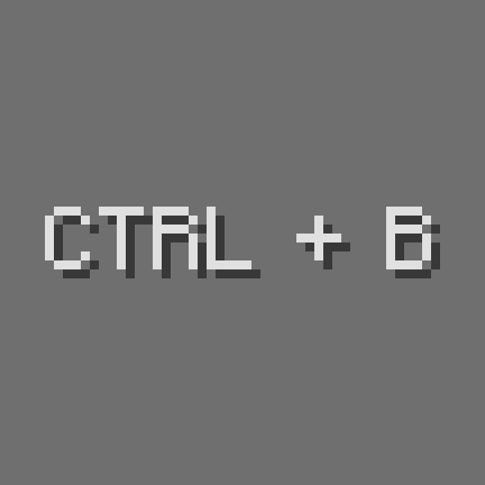
Rebind Narrator
Tiny 1.12 mod that allows for rebinding the narrator hotkey, instead of having it be hardcoded to Ctrl-B. Who knows why that key doesn't already exist?
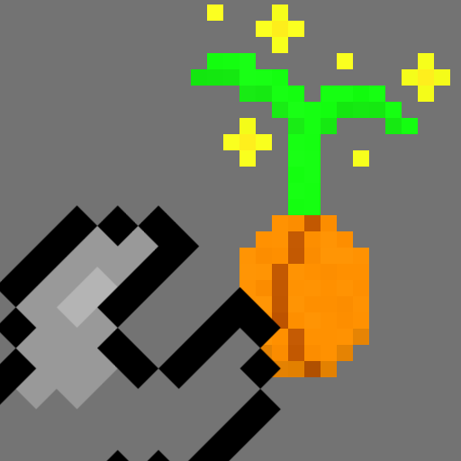
Botania Tweaks
Tons and tons of patches to Botania; some balance-related tweaks, a few configuration options, difficulty adjustments, and of course octuple compressed tiny potatoes.
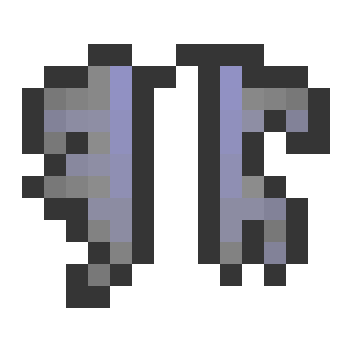
Broken Wings
Tiny mod that allows modpack makers and server owners to disable flight per-dimension.
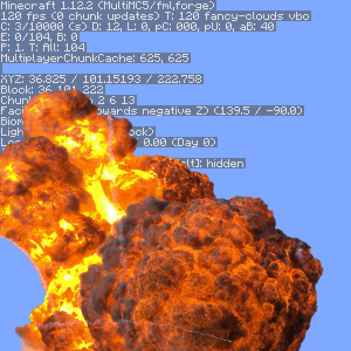
No Debug 5 You
When mods spam up your F3 debug screen, ND5U is here to help. Ungracefully nukes other mods' EventBusSubscribers from orbit.
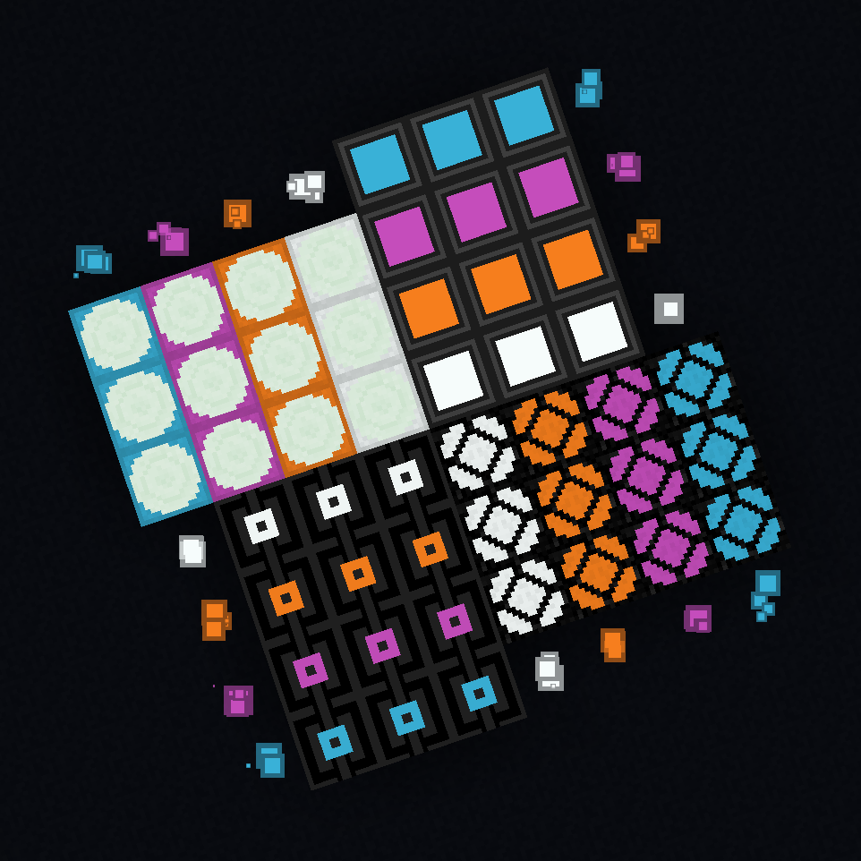
Dazzle
More redstone lamps than you will ever want or need. Sixteen color options, four different varieties, invertable, and have analog variants. Plus, some extra goodies, like a light sensor!
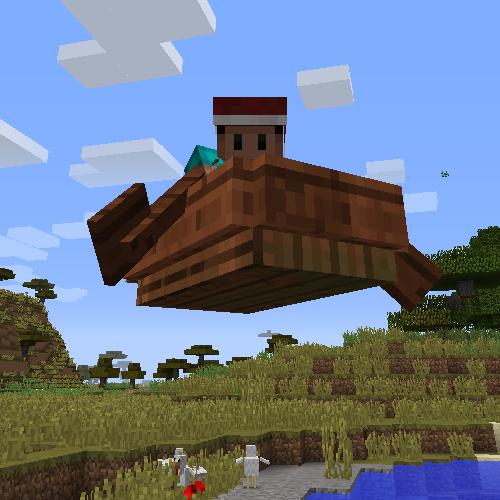
Floaty
my greatest mistake
games
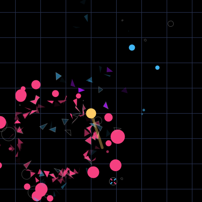
Center
Two-button arcade shooter microgame, for Ludum Dare 34. Made with Processing.
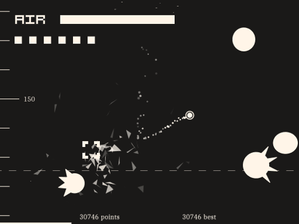
Black Sea
Microgame about diving into an endless sea, for BaconGameJam 9. Made with Processing.
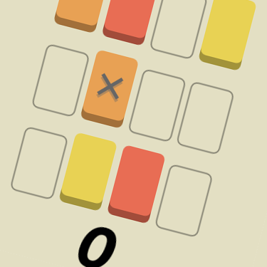
bricky block
Threes-like slide-em-up with a twist, for Ludum Dare 31. Made with Processing.
etc
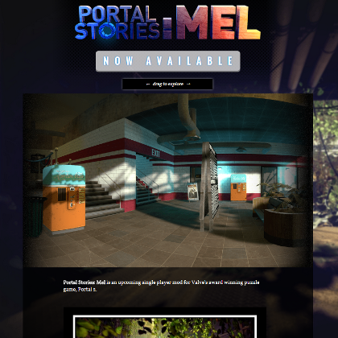
Portal Stories Homepage
I did the homepage for Portal Stories, a great Portal 2 mod, as well as QA for it.
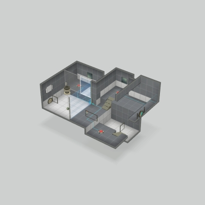
Portal 2 Workshop Maps
I really enjoy making Portal 2 maps. Something about Portal 2's style of puzzle game really tickles my brain the right way. I have like 200 maps. It's a bit depressing how much time I spend on this game, tbh.
danger zone
Advertising
Oh man, this is some super cringy 3deep 5me stuff I made in like, middle school, for a weird school project. Okay.

"organ"
when u promised u were gonna do a website for a school project but put off the deadline until 12 hours before so you just lower your standards and then lower them some more. and then lower them some more still. then a little bit more. perfect. wait no just a bit lower. there.